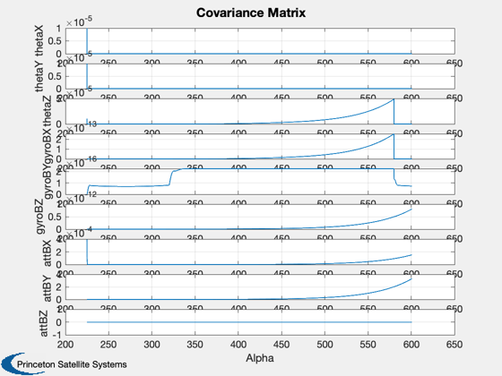
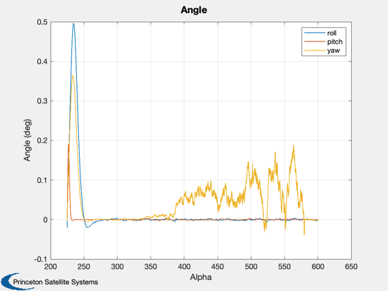
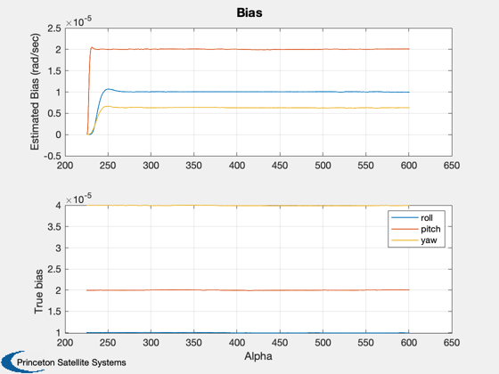
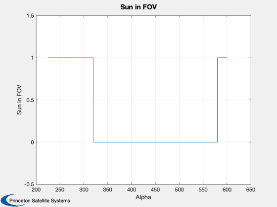
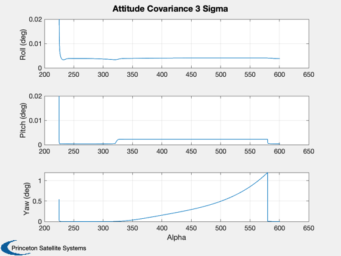

Test a Kalman Filter using a sun vector and the earth vector.
Includes states for unknown attitude biases. You can turn these states on or off. If on you will not get an accurate yaw bias estimate. ------------------------------------------------------------------------- See also C2DZOH, Plot2D, CosD, KFSunAndEarth2, RW2SDev -------------------------------------------------------------------------
Contents
------------------------------------------------------------------------- Copyright 1999 Princeton Satellite Systems, Inc. All rights reserved. -------------------------------------------------------------------------
Turn off the bias states
%-------------------------
d = struct;
d.biasStates = 1;
degToRad = (pi/180);
radToDeg = 180/pi;
arcsecToRad = degToRad / 3600;
perHrToPerSec = 1/3600;
dT = 10;
nSim = 9000;
angle = linspace(0,7.291e-5*dT*nSim,nSim) + 3*pi/2 - pi/4;
pPlot = zeros(9,nSim);
xPlot = zeros(9,nSim);
sunPlot = zeros(1,nSim);
bPlot = zeros(3,nSim);
gyro model
sqrtDT = sqrt(dT); % units of 1 sigma given for wn is rad/sec^.5, for rw rad/sec^1.5 % These are continuous values (except for an, which ?? wnIFOG = 1.4544e-6*ones(3,1);%/sqrtDT*ones(3,1); % white noise added to bias (drift) rad/sec % rwIFOG = 8.0964e-9*ones(3,1); %*sqrtDT*ones(3,1); % random walk added to bias (drift) rad/sec rwIFOG = RW2SDev(0.015*perHrToPerSec)*ones(3,1); % random walk added to bias (drift) rad/sec % rwIFOG = RW2SDev(0.006*perHrToPerSec)*ones(3,1); % random walk added to bias (drift) rad/sec anIFOG = zeros(3,1); %4.8481e-7*ones(3,1); % white noise added to delta angles % sfIFOG = 0.03928 * arcsecToRad; % scale factor for gyro counts
use Litton HRG parameters (these are not IFOG #'s, but keep same variable names for convenience)
rwIFOG = RW2SDev(0.005*perHrToPerSec)*ones(3,1); wnIFOG = RW2SDev(0.0003)*ones(3,1);
assume there is an unknown (and unestimable) attitude bias
bAtt = [0;0;0]; % this is the unknown attitude bias nAtt = [0.067; 0.071; 0] / 3 * degToRad; bGyro = [1;2;4]*1.e-5; wO = -7.291e-5; w = [0;wO;0]; p = diag([1e-5;1e-5;1e-5;0;0;0; nAtt]); x = zeros(9,1); theta = [0;0;0]; %[0.01;0.02;0.03] * degToRad; d.wO = w;
convert from continuous to discrete measurement noise
sigmaESA = [0.0280 0.0180]*degToRad /sqrtDT;
sigmaESA = [0.11 0.055]/3 *degToRad /sqrtDT; sigmaSSA = sqrt(0.003^2/12 + 0.001^2) *degToRad * ones(1,2) /sqrtDT; % sigmaSSA = 3 *degToRad * ones(1,2) /sqrtDT; d.r = diag([sigmaSSA sigmaESA].^2); % d.q = diag([wnIFOG.^2; rwIFOG.^2]*dT); % discrete plant noise depends on gyro & dT d.q = diag([wnIFOG.^2; rwIFOG.^2; zeros(3,1)]*dT); % discrete plant noise depends on gyro & dT sigWN = sqrt(diag(d.q(1:3,1:3))); sigRW = sqrt(diag(d.q(4:6,4:6))); d.noSun = CosD(50); % cosine of the sun sensor FOV %d.noSun = 1.1; % prevents all sun measurements %d.noSun = -2; % allows sun measurements throughout the orbit b = [eye(3);zeros(6,3)]; a = [ 0 0 -wO -1 0 0 0 0 -wO;... 0 0 0 0 -1 0 0 0 0 ;... wO 0 0 0 0 -1 wO 0 0 ;... zeros(6,9)];
Turn off the bias states
%------------------------- if( ~d.biasStates ) a = a(1:6,1:6); b = b(1:6,1:3); d.q = d.q(1:6,1:6); p = p(1:6,1:6); pPlot = pPlot(1:6,:); x = x(1:6); xPlot = xPlot(1:6,:); end [d.a, d.b] = C2DZOH(a,b,dT); sunAng = 0; % equinox cSun = cos(sunAng); sSun = sin(sunAng);
Simulation
%----------- for k = 1:length(angle) % Plotting %--------- pPlot(:,k) = diag(p); bPlot(:,k) = bGyro; xPlot(:,k) = x; % Sun sensor %----------- sAK = sin(angle(k)); cAK = cos(angle(k)); d.u = [-sAK*cSun;sSun;-cAK*cSun]; d.uMeas = [ 1 theta(3) -theta(2);... -theta(3) 1 theta(1);... theta(2) -theta(1) 1 ]*d.u; d.uMeas(2:3) = d.uMeas(2:3) + sigmaSSA'.*randn(2,1); % Earth Sensor %------------- d.theta = (theta(1:2) + bAtt(1:2)) + sigmaESA'.*randn(2,1); % Random walk %------------ bGyro = bGyro + sigRW.* randn(3,1); % Total drift is random walk + noise %----------------------------------- drift = bGyro + sigWN.* randn(3,1); % Update the covariance %---------------------- [p, x] = KFSunAndEarth2( p, x, d, w + drift + anIFOG.*randn(3,1)/dT ); % Show when the sun is available as a measurement %------------------------------------------------ sunPlot(k) = d.u(1) >= d.noSun; end angle = angle*radToDeg; if( d.biasStates ) yL = ['thetaX';'thetaY';'thetaZ';... 'gyroBX';'gyroBY';'gyroBZ';... 'attBX ';'attBY ';'attBZ ']; else yL = ['thetaX';'thetaY';'thetaZ';... 'gyroBX';'gyroBY';'gyroBZ']; end Plot2D(angle,pPlot, 'Alpha', yL, 'Covariance Matrix'); Plot2D(angle,xPlot(1:3,:)*radToDeg,'Alpha','Angle (deg)','Angle'); legend('roll','pitch','yaw') Plot2D(angle,[xPlot(4:6,:);bPlot],'Alpha',strvcat('Estimated Bias (rad/sec)','True bias'),'Bias',[],['1:3';'4:6']); legend('roll','pitch','yaw') Plot2D(angle,sunPlot,'Alpha','Sun in FOV'); ax = axis; axis([ax(1:2) -0.5 1.5]); att3Sigma = sqrt(pPlot(1:3,:))*3*radToDeg; Plot2D(angle,att3Sigma,'Alpha',strvcat('Roll (deg)','Pitch (deg)','Yaw (deg)'),'Attitude Covariance 3 Sigma') ax = axis; for k = 1:2 subplot(3,1,k); set(gca,'xticklabelmode','auto'); axis([ax(1:2) 0 0.02]); end %-------------------------------------- % PSS internal file version information %--------------------------------------    